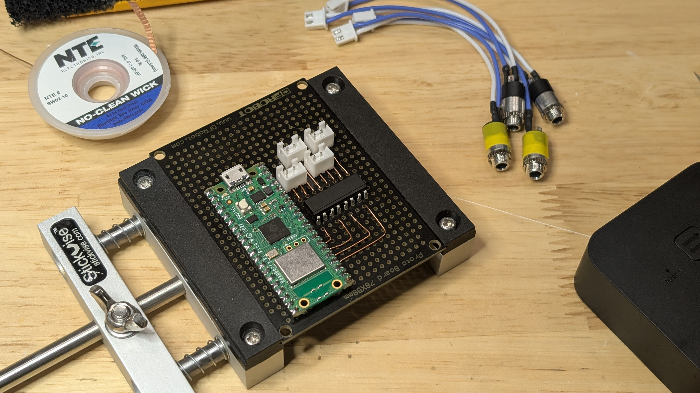

Workspace 2025 Part 2: The Switch
As discussed in Part 1, I need the ability to switch the inputs on two KVMs and two USB switches that aren’t physically on my desk.
Previously, I had a hacked together setup to remotely trigger my single KVM and single USB switch:
The mechanical keyboard switches on the left were wired (via ethernet twisted pairs) to a) the remote for my KVM and b) a jack that I soldered onto the button of the USB switch. I used the remote for the KVM because it was provided by work and I didn’t want to make any irreversible changes to the hardware.
This … could be better.
The New Plan⌗
First, I bought new KVMs that had a wired remote option. They came with a nice button that wires into the KVM via a standard 3.5mm headphone jack. Easy enough.
Unfortunately, I couldn’t find a (cheap) USB switch with the same option, so I had to add the headphone jack myself.
The USB switch I bought has a nice big button:
and I could pretty easily wire a jack to the bottom pins of that button:
Doesn’t look too bad from the outside, either:
With that completed (x2), I now had four devices (2x KVM, 2x USB switches) that can be activated using a 3.5mm headphone jack. Time to build something that can activate them all remotely.
Hardware⌗
I had a Pi Pico W on hand that was well suited for the task. I added a 4 channel optoisolater in the mix just to isolate all of the devices from the Pico and from eachother. The schematic is pretty straightforward:
Digital output pins on the Pico are connected to the anodes on each channel of the optoisolator, with the cathodes connected to ground. On the output side, the tip and sleeve of the barrel jack are connected to the collector and emitter (respectively) of the corresponding photodiode.
When, for example, GPIO18 on the Pico is low, the LED betweens pins 1 and 2 of the LTV-847 is off, and so the circuit between the tip and sleeve of J1 is open.
When GPIO18 goes high, the LED turns on and activates the photodiode between pins 15 and 16, closing the circuit between the tip and sleeve of J1 and simulating a button press.
Here’s what it all looks like on a perfboard:

I opted to connect the barrel jacks to the perfboard via JST connectors to make assembly easier. As you can see, there’s not much to it.
Slap it all in a 3d printed enclosure, and voilà:

I designed the enclosure in FreeCAD. It has four holes in the front for the 3.5mm barrel jacks as well as a cutout in the back for a panel-mount USB cable that gets plugged into the Pico. I used slots and nuts to fasten the perfboard to the enclosure and to attach the lid. This was way nicer than using heat set inserts or something like that.
Firmware⌗
The code running on the Pico is simple as well. It connects to WiFi, then connects to an MQTT broker and listens for messages containing the values “1”, “2”, “3”, or “4” to indicate which jack to turn on and then off.
I initially wrote the firmware using Micropython. The development experience was … ok. Thonny is basically a text editor with basic snytax highlighting, so it leaves a lot to be desired.
Unfortunately, the support for the Pico W’s WiFi module seems to be really flaky in Micropython. I decided to swap over to the Arduino framework, and that’s been much more reliable.
Now I just need a convenient way to send MQTT commands to the switcher … more on that in Part 3.
Resources⌗
The code, enclosure, and schematic are all on Github.